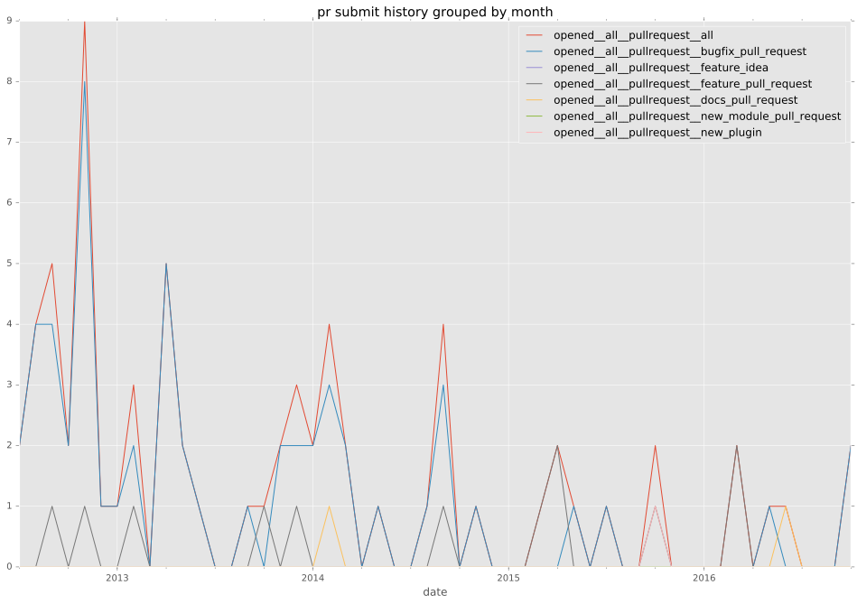
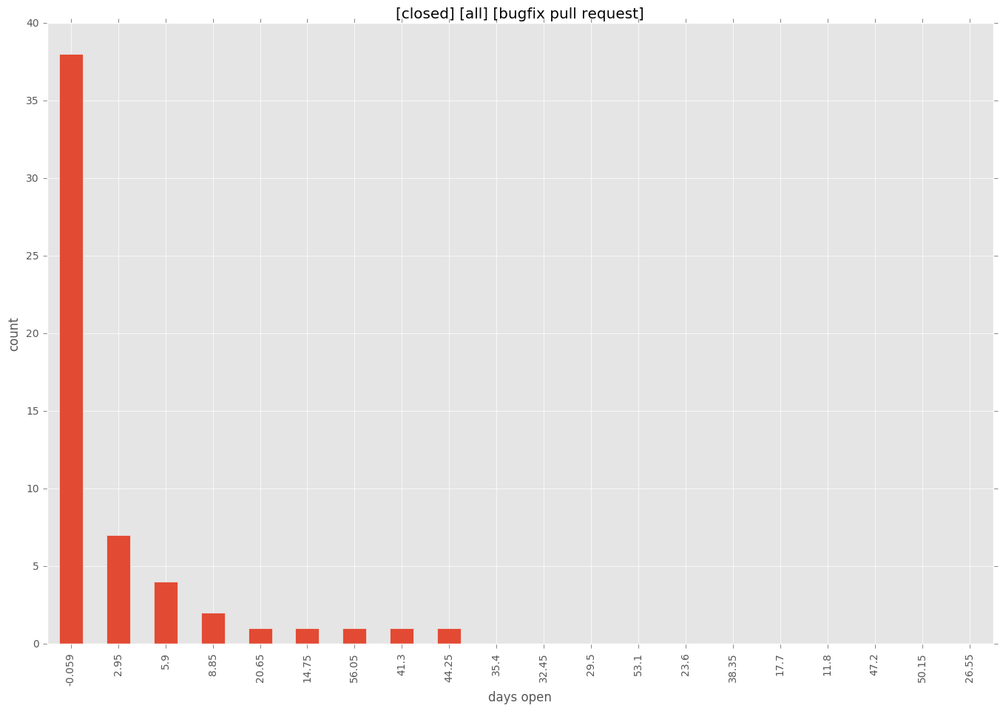

total issue counts
feature pull request: 10
docs report: 2
pullrequest: 68
docs pull request: 2
bugfix pull request: 56
feature idea: 4
issue: 30
bug report: 24
issue history

pullrequest history

days open by issue type
bugfix pull request
count: 85
std: 11.5421526812
min: 0
max: 59
median: 0.0
mean: 4.58823529412
all
count: 121
std: 23.7098653201
min: 0
max: 168
median: 0.0
mean: 8.97520661157
pullrequest
count: 0
std: nan
min: nan
max: nan
median: nan
mean: nan
docs pull request
count: 3
std: 0.0
min: 0
max: 0
median: 0.0
mean: 0.0
docs report
count: 0
std: nan
min: nan
max: nan
median: nan
mean: nan
feature pull request
count: 13
std: 10.6180784393
min: 0
max: 28
median: 7.0
mean: 9.92307692308
feature idea
count: 1
std: nan
min: 144
max: 144
median: 144.0
mean: 144.0
issue
count: 0
std: nan
min: nan
max: nan
median: nan
mean: nan
bug report
count: 19
std: 41.7929314933
min: 0
max: 168
median: 0.0
mean: 22.2631578947
closures grouped by total days open
